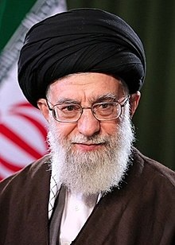

Ali Khamenei
Ali Khamenei is the Supreme Leader of Iran. He was born in 1939 in Mashhad, Iran. His father was a cleric and he has seven brothers and sisters. He was President of Iran first and then stayed in power to become the Supreme Leader of Iran in 1989.